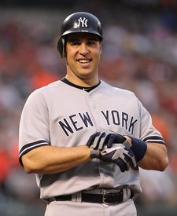

Texas 21st District
Chip Roy (R) gave up the seat to run for Texas attorney general. 2 candidates are on the ballot on November 3, 2026.
Who should win this race, and why?Say what you think. Other readers can answer you.DiscussKristin Hook
Democrat · biologist, 2024 nominee, former Senate fellow
No gradeNo grade yetI have no votes in Congress to count for Hook, and what Hook has said and done settles only 1 of my principles. I went through it on October 26. A grade needs 4.
Raised $388,865 since January 2025: 98% from people, 1% from PACs and other committees, 1% transfers and other income. The filing at FEC.gov

Mark Teixeira
Republican · former baseball player, Republican nominee
ALiberty Score A100 out of 100 across 4 principles. Graded on what Teixeira has said and done, because I have no votes in Congress to count for Teixeira.
Raised $4,392,606 since January 2025: 63% the candidate’s own money, 19% from people, 10% from PACs and other committees. The filing at FEC.gov
Voting in Texas: how to register, vote early or vote by mail. Election Day is November 3.
Side by side
A solid letter is a grade from recorded votes on that principle. An outlined letter is on the same scale, for a candidate with no votes: it comes from what that candidate has said and done, and every source is listed below.
Kristin Hook, on the record
I have no votes in Congress to count for Hook, so the grade above comes from this list: what Hook has said and done on my principles. Each line has its source, and each is marked with the same test I use for votes.
-
In a KUT News interview she called the war in Iran unlawful and said Congress is failing to stop the president.
“This is an unlawful war that only Congress should have initiated, and the current Congress is not doing its job in stopping a reckless president who has thrown us into a war that nobody asked for,”
- By the test I use for votes
- Not clear either way
The quote condemns a war as unlawful but does not itself name Iran or any policy, so by the brief it settles nothing.
-
Hook supports raising the federal minimum wage and changing the tax code so the wealthy pay more, without naming a tax.
“I support raising the federal minimum wage, unrigging our tax code so the wealthy pay their fair share, and strengthening Medicare, Medicaid, and Social Security”
- By the test I use for votes
- Not clear either way
No specific tax is named, so it does not settle the measure.
-
Hook lists a path to citizenship or legal status for undocumented immigrants among her top three immigration priorities.
“Providing a path to citizenship or legal status for undocumented immigrants, particularly for Dreamers or those who have Temporary Protected Status.”
- By the test I use for votes
- Against liberty
A path to citizenship for people here illegally follows the rule on amnesty and a path to citizenship.
-
Hook lists stopping the weaponization of ICE and making enforcement transparent as her first immigration priority.
“Putting a stop to the weaponization of ICE and ensuring that immigration enforcement operations are transparent, accountable, and consistent with constitutional protections for all persons in the U.S.”
- By the test I use for votes
- Not clear either way
Oversight of ICE without a call to end or oppose deportations does not settle the measure.
-
In a KSAT primary story she said asylum seekers and legal residents are held in a detention center near San Antonio and should not be held as in a prison.
“There's no reason that they should be in a prison facility. They did not commit a crime.”
- By the test I use for votes
- Not clear either way
It objects to detention conditions without naming deportation, the border or a path to citizenship, so it does not settle the measure.
-
Her campaign site, as quoted by Branch, commits to a secure, orderly and humane border.
“secure, orderly, and humane border”
- By the test I use for votes
- With liberty
Committing to a secure border is with on the borders test.
-
In the same KUT interview she said border security does not need removals of people from their homes and jobs.
“We can have border security without ripping people out of their homes, without taking people out of their jobs, without stealing people from their communities and tearing families and communities apart,”
- By the test I use for votes
- Against liberty
Opposing removals of people living here is against on the borders test.
Mark Teixeira, on the record
I have no votes in Congress to count for Teixeira, so the grade above comes from this list: what Teixeira has said and done on my principles. Each line has its source, and each is marked with the same test I use for votes.
-
Asked about the US strikes on Iran, he called Iran a terrorist state and said its uranium enrichment is unacceptable.
“that’s unacceptable for a terrorist state like Iran.”
- By the test I use for votes
- With liberty
Treating Iran's enrichment as unacceptable in the context of the US strikes is with liberty on tyranny.
-
His site says he would end forever wars and put American interests first, without naming Ukraine, Taiwan or NATO.
“End forever wars and put America's interests first at home and abroad.”
- By the test I use for votes
- Not clear either way
No ally or aid programme is named, so the words do not settle the measure.
-
Asked in a voter guide whether the US relationship with Israel is important, Teixeira answered yes and spoke of working with allies.
“Yes. I believe in President Trump's mission to work with our allies to establish lasting peace in the region.”
- By the test I use for votes
- Not clear either way
The words do not themselves name Israel or say whether arms would be kept flowing, so they do not settle the measure.
-
On the iVoterGuide questionnaire he chose the option that the United States has become too involved in other countries' policies, without naming Ukraine, NATO or Taiwan.
“The United States has become too involved in others' policies and should remain focused on issues regarding our own sovereignty unless in imminent danger.”
- By the test I use for votes
- Not clear either way
No ally, Ukraine, NATO or Taiwan is named, so the words do not settle the measure.
-
On the iVoterGuide questionnaire he marked Strongly Disagree to the statement that people who can afford it should pay more taxes to give relief to working families.
- By the test I use for votes
- With liberty
Rejecting higher taxes on higher earners is with liberty on free markets.
-
On the iVoterGuide questionnaire he chose the option that keeps Medicaid and Medicare and rejects any other taxpayer-funded health programs, over government health care for all.
“C) Medicaid and Medicare should remain available, but no other taxpayer-funded programs are necessary.”
- By the test I use for votes
- With liberty
Not choosing government-run health care for all is with liberty on free markets.
-
His campaign site promises to end DEI and what it calls woke indoctrination in schools.
“End radical woke indoctrination, defend parental rights, kill DEI, restore patriotic education rooted in American and Texas values.”
- By the test I use for votes
- With liberty
Ending DEI and race and gender ideology in schools is with liberty on equal rights.
-
On the iVoterGuide questionnaire he marked Strongly Agree that biological males should not take part in women's sports or use women's spaces.
- By the test I use for votes
- With liberty
Keeping women's sport female is with liberty on equal rights.
-
His campaign site says he would fully secure the southern border and deport people in the country illegally.
“Fully secure the southern border, deport illegal aliens, and crush the cartels to keep Texans safe.”
- By the test I use for votes
- With liberty
Securing the border and deporting those who break the law is with liberty on borders.
-
He said the country needs to enforce the immigration laws already on the books.
“We need to enforce the laws that are on the books.”
- By the test I use for votes
- With liberty
Enforcing the existing immigration law is with liberty on borders.
-
On the iVoterGuide questionnaire he marked Strongly Disagree to supporting sanctuary cities.
- By the test I use for votes
- With liberty
Opposing sanctuary policies is with liberty on borders.
Who is on the ballot: the state election offices, as listed on Wikipedia on October 29, 2026, checked against the candidate file of the Federal Election Commission. See a name that is wrong or missing? Say so in the discussion.
Who should win this race, and why?
Say it where other readers can answer you. Opinions, videos and corrections about this race are all in one place.
Discussion
Texas 21st District
Opinions, videos, corrections and bug reports about this race, all in one place. What readers post is their words, not mine. My answers carry the Host tag.
Leave out anything private about anyone. The rules, what your account keeps, and what readers have changed so far
Know this race better than I do?
Argue it with the hosts on a call. The community meets every day, and members help decide what goes on these pages.